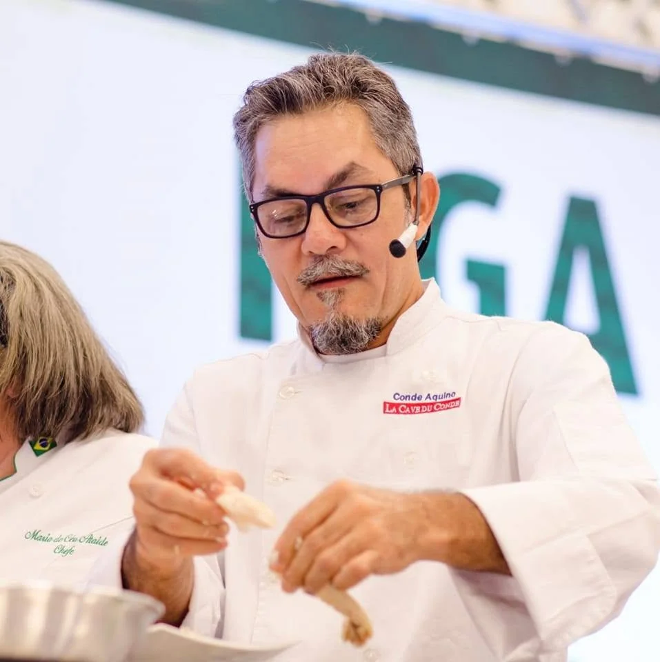
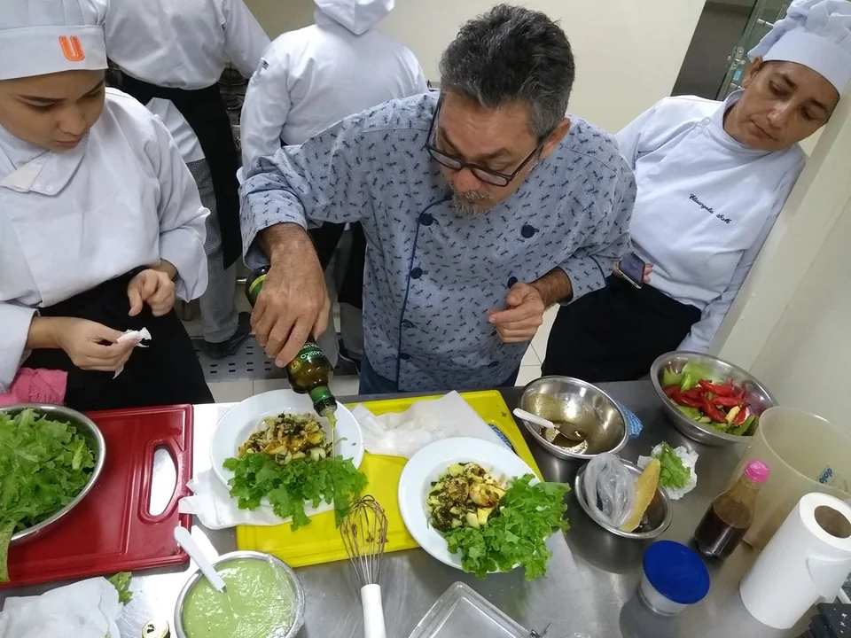

Quem somos nós?
Um refúgio de alta gastronomia e sabores autênticos oculto no coração de São Gabriel da Cachoeira. Com uma localização discreta e ambiente rústico elegantemente decorado em tons amadeirados, o La Cave du Conde oferece um refúgio arejado e intimista. Nosso foco é o atendimento personalizado, unindo ingredientes nativos da floresta a técnicas contemporâneas.


Chef Conde Aquino
Proprietário e Chef do Restaurante e com anos de experiência na gastronomia amazônica, o Chef Conde Aquino combina tradição e inovação para criar pratos únicos com ingredientes locais.